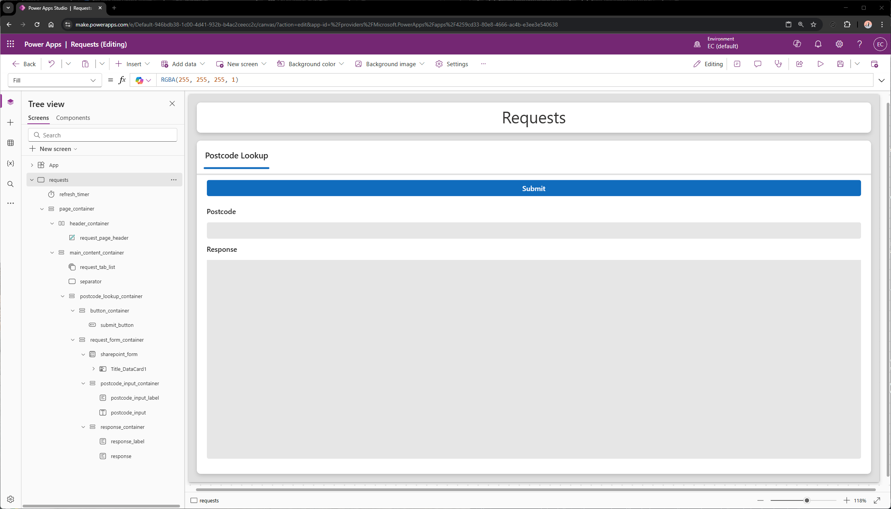
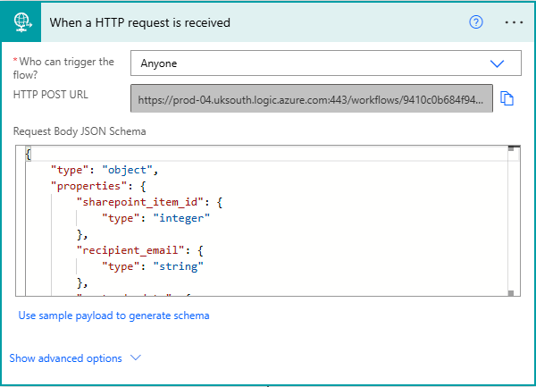

WRITE-UP INCOMPLETE - Proof of concept to be added. It does work pretty well though, trust me bro.
Pseudo API
Disclaimer
This was an idea thought up for the contact centre I work at, in my role as a data engineer, within a constrained corporate IT environment. After some tinkering, this seems to be the most reliable/seamless method I've found given the constraints, the constraints are explored in the discussion section of this project.
Overview
The initial purpose of this project was to allow the transfer of data from the Microsoft ecosystem to my local DB, so it could be merged with another dataset (call logs) before being sent back to the Microsoft ecosystem. However, since then I've realised that this idea has scope to scale.
The problem this solves could essentially be what you want it to be. It's the reason I haven't scaled this idea yet — I'm waiting for a concrete use case, beyond what I'm already using it for.
Tools & Workarounds
Due to the limitations of the environment, I had to employ some unconventional but effective solutions to get this project operational:
- SharePoint – Used for storing function names, parameters, and logging requests.
- Power Apps (Free License) – Hosts a form tied to the SharePoint list and Excel workbook.
- Excel – Stored locally but synced with OneDrive for external access.
- OneDrive – Hosts the Excel workbook and keeps it synced.
- Python – Monitors the Excel sheet locally and executes functions asynchronously.
- Power Automate (Free License) – Receives responses via HTTP and updates SharePoint accordingly.
- Always-on PC – Required to run the local Python listener.
Workflow
Here’s how it operates at a high level:
- User submits a form via Power Apps with function and parameters.
- On submit, Power Apps writes to SharePoint and the synced Excel workbook.
- Python detects new spreadsheet entries, and runs the function described.
- Python makes a HTTP request to a Power Automate HTTP trigger.
- Power Automate updates SharePoint, logging the outcome and handles any follow-up actions.
Technical Breakdown
Excel Workbook
We’ll start by creating the spreadsheet to receive requests from Power Apps. We’ll create a table with the headers: ‘sharepoint_item_id, ‘function’, and ‘parameters’ (Figure 1). I’ve named this table ‘request_log’ so it’s recognisable in the Power App’s list of data sources if we ever want to add more excel sources down the line.
Then we’ll save that to a folder that syncs with OneDrive with the name ‘requests’ (Figure 2), ensuring that the OneDrive folder is part of the same environment where we’ll create the Power App, SharePoint list, and the Power Automate flow. In my case, my environment is ‘EC’.
Excel Workbook
We’ll also create a CSV called ‘requests_actioned’ (Figure 2), containing the same headers as OneDrive spreadsheet as well as some additional headers: ‘created, ‘completed’, ‘status’, and ‘failure_reason’. I’ve saved this to the same folder for this example but it’s better to keep this file in an offline folder to avoid needless disk usage from OneDrive syncs. It would be wise to create a backup file in OneDrive though, which could be overwritten daily during downtime.

Python Script (Part 1)
We’ll need a Python script to monitor the spreadsheet we’ve just created. To be able to catch new data as soon as it syncs, we need to ensure that the spreadsheet is open. Because of this, we can’t use something like Pandas to read the spreadsheet as it’ll be read from disk. In practice, if you were to use Pandas to poll the spreadsheet, you would find it takes an excessive amount of time to see new data which isn’t ideal for this use case. Therefore, we need to use a library like xlwings, which will allow us to keep the spreadsheet open and read it in a loop.
To get the data from 'requests.xlsx', and read from and append to 'requests_actioned.csv', we’ll define a few functions:
- open_excel
- read_table
- read_csv
- append_csv
The dependancies for this set of functions are xlwings (imported as xw) for reading 'requests.xlsx', and csv for reading and appending to 'requests_actioned.csv'.
We'll also define a function for users to call, lookup_a_postcode, which has aiohttp as a dependancy. We'll use aiohtttp to make asynchronous HTTP requests.
open_excel
This function opens an instance of excel, opens a particular file, and outputs a worksheet object. It takes two input arguments, 'xl_path' and 'sheet_name'.
In this example, 'xl_path' is the local path to 'request.xlsx', and 'sheet_name' is the name of the worksheet that contains the table we created.
def open_excel(xl_path, sheet_name):
# Start a visible Excel instance
app = xw.App(visible=True)
# Open the predefined path in Excel instance
wb = app.books.open(xl_path)
# Close new workbook that opens by default from running xw.App()
if any(book.name == "Book1" for book in app.books):
app.books["Book1"].close()
# Return the worksheet as an output using the prefined sheet name
return wb.sheets[sheet_name]
read_table
This function gets a table object from within a worksheet using the table's name, gets the cell range that the table exists in, and outputs the cell values in that cell range as a list of lists. Each child list within the parent list respresents a row of data in the table. It takes two input arguments, 'ws' and 'table_name'.
In this example, 'ws' is the worksheet object that we get from the 'open_excel' function, and 'table_name' is the name of the table in 'requests.xlsx'.
def read_table(ws, table_name):
# Get the table object using the predefined table name
table = ws.api.ListObjects(table_name)
# Get the cell range of the table
data_range = table.Range
# Return the data within the table cell range as a list of lists
return ws.range((data_range.Row, data_range.Column)).expand().value
read_csv
This function reads a csv and outputs the data within as a list of lists, just like our 'read_table' function. It takes one input argument, 'csv_path'. By default, the 'mode' argument of the open function is set to 'r' (read) but i've added it in for the sake of clarity.
Another argument in the open function worth mentioning is 'newline'. In a csv, each row ends with a newline character when written (\r\n on Windows, and \n on UNIX/MacOS), which you can't see unless you read it as bytes. Python replaces \n with \r\n by default in csvs when read as text. So because we've written the csv with Windows, Python converts \r\n to \r\r\n, which would create blank rows. So by setting the newline argument to an empty string, we're telling Python to ignore the newline characters, and we let the csv module instead handle it correctly with the 'csv.reader' function.
In this example, 'csv_path' is the local path to 'requests_actioned.csv'.
def read_csv(csv_path):
# Open csv at the predefined path
with open(csv_path, mode='r', newline='') as f:
# Read csv and return data as a list of lists
return list(csv.reader(f))
append_csv
This function appends a row of data to a csv and outputs the data within as a list of lists, just like our 'read_table' function. It takes one input argument, 'csv_path'.
In this example, 'csv_path' is the local path to 'requests_actioned.csv'.
def append_csv(csv_path, data):
# Open csv at the predefined path in append mode
with open(csv_path, mode='a', newline='') as f:
# Write input data as rows to csv
csv.writer(f).writerow(data)
lookup_a_postcode
This function makes a HTTP GET request to get data from an API, waits for the response, constructs a payload, then sends the payload in a HTTP POST request to a Power Automate flow that has a 'When a HTTP request is received' trigger. This is an asynchronous function, which is represented by the 'async' keyword at the beginning of the function definition. This allows us to execute this function in the background without blocking the 'main' function of the script (explained in Part 2). As we can run functions in the background, it allows multiple separate instances of this function to be running at the same time.
The API we're going to be calling in the first request is the Postcodes.io API, which is used for searching, validating, and geolocating UK postcodes. In particular, we'll be calling the Lookup Postcode endpoint which requires you to make a GET request to 'https://api.postcodes.io/postcodes/', followed by a postcode. In return, the API will respond with a JSON object containing two keys: 'status', and 'result'. The value of 'status' will be a three-digit status code integer, which indicates what happened when the server processed the request. The value of 'result' will be a JSON object containing location data associated with the postcode we inserted into the endpoint url. The 'result' object is what we'll be sending to Power Automate in our second request.
async def postcode_lookup(sharepoint_item_id, recipient_email, postcode):
# Define the endpoint url for the api we're going to get data from
postcode_lookup_url = f"https://api.postcodes.io/postcodes/{postcode}"
# Start an asynchronous HTTP session
async with aiohttp.ClientSession() as session:
# Make the GET request and wait for the response
async with session.get(postcode_lookup_url) as postcode_lookup_response:
# Store the response in a variable
postcode_lookup_data = await postcode_lookup_response.json()
# Extract the value of the 'result' key
postcode_data = postcode_lookup_data["result"]
# Construct the data payload to send to power automate, as json
payload = {
"sharepoint_item_id": sharepoint_item_id,
"recipient_email": recipient_email,
"postcode_data": postcode_data,
"status": "completed"
}
# Define the endpoint url generated by the power automate HTTP trigger
power_automate_url = ''
# Trigger the power automate flow and wait for the response
async with session.post(power_automate_url, json=payload) as power_automate_response:
# Return response as an output once received
return await power_automate_response.json()
SharePoint
Next, we'll to create a SharePoint list which is going to operate as a log of requests that sits within the Microsoft ecosystem. We'll call this list 'Requests', and create four columns: Function, Parameters, Completed, and Response. These columns are boxed in red, in the screenshot below. The other columns in the screenshot are default metadata columns created by SharePoint.
The Function column is going to contain the name of the function we've called, Parameters will contain the parameters for the function we're calling, Completed will contain a timestamp which will be updated on completion of the request, and Response will contain the response from the Python script.
Power Apps
Now we'll create our Power App that the users will interact with to send requests, and in this example, view the response. I won't be going through the whole process of creating the Power App but i'll just lay out the 'important' bits.
This Power App has been given two data sources (screenshot below): the 'request_log' table from the OneDrive spreadsheet we created in the Excel Workbook section, and the Requests SharePoint list we created in the previous section.
I've created a basic, clean layout with the header and main content separated into different containers (screenshot below). Within the main content container, i've added a tab list which will allow users to switch between requests. I've also added a request container for that particular request, which contains a submit button, a text input for users to submit a postcode, and a response text label. There is also a new form control within the request container that uses the Requests SharePoint list as a data source which has been made invisible, which we're going to use in the submit button's OnSelect property.
Now we'll set the submit button's OnSelect property to the below, to pass the data for the request to both of the apps data sources.
// Set the submit button's display mode to disabled
Set(var_submit_btn_dm, DisplayMode.Disabled);
// Submit a blank form to the Requests sharepoint list
SubmitForm(sharepoint_form);
// Set a variable to the form's last submission record
Set(var_last_submit, sharepoint_form.LastSubmit);
// Set a variable to the function name we're calling as a string
Set(var_function_called, "postcode_lookup");
// Set a variable to the function's parameters as a concatenated string
Set(var_parameter_input, User().Email & ", " & postcode_input.Value);
// Update the sharepoint item we created with the blank form, with the function name and it's parameters
Patch(
Requests,
var_last_submit,
{
Function: var_function_called,
Parameters: var_parameter_input
}
);
// Write a row to the request_log table in the OneDrive spreadsheet with the form's last submitted sharepoint item id, the function name, and it's parameters
Patch(
request_log,
Defaults(request_log),
{
sharepoint_item_id: var_last_submit.ID,
function: var_function_called,
parameters: var_parameter_input
}
);
// Clear the postcode text input
Reset(postcode_input);
// Set the submit button's display mode to edit
Set(var_submit_btn_dm, DisplayMode.Edit);
In the above, there's a few things to clear up that we've not yet explained:
- var_submit_btn_dm is a variable that we've used as the value for the submit button's DisplayMode property. We're disabling the button when it's clicked to avoid duplication of requests. The classic button control has a property for this functionality but because we can't not touch shiny new things, we've opted to use the newer button control despite it not having this property...
- We needed the form as a non-interactable control simply to obtain a SharePoint Item ID from the blank form submission, to pass to Python through the OneDrive spreadsheet. This will allow us to pass the correct data to the correct log in the SharePoint list when we get a response from Python.
- The response text control's text property has been set to a lookup function to lookup the value of the Response column for the new item we created in the SharePoint list.
- There's a timer control on the page that is set to auto-start, to repeat, has it's OnTimerEnd property set to 'Refresh(Requests)' to refresh our SharePoint list automatically, and with a duration of 1 second because we need our request responses yesterday.
Power Automate
Trigger
You may have noticed that in the lookup_a_postcode function from the Python Script (Part 1) section, we've defined the power_automate_url variable as an empty string. Now we'll set up a Power Automate cloud flow with a 'When a HTTP request is recieved' trigger. This will give us the url to use as the endpoint for our second request. The URL will be generated when the flow is saved.
There's one very crucial property within the trigger that needs to be changed. By default, the 'Who can trigger the flow?' property is set to 'Any user in my tenant'. With this default setting, for our local Python script to be able to trigger this flow, we'd have to register an app on Azure Active Directory and use MSAL (Microsoft Authentication Library) in the script. As I don't have access to this at my company and don't have the patience for a 6 month back and forth with the IT department, i've set this property to 'Anyone'.
Another property worth setting is the Request Body JSON Schema but it's more of an optional thing. This will give the trigger strict guidelines on what data/data types to expect, but will also give us easier access to JSON properties when we're selecting dynamic content to use in the rest of our flow. Because it knows what to expect, it can give us those options for easy selection. If the data you're sending is short and sweet, it's pretty simple to write this manually but there's also an option to 'Use sample payload to generate schema'. So if the payload is of ample size (like in this case), or if you simply can't be bothered writing out the schema manually, you can just paste a sample payload into the input that this option presents. We can just take the structure of the payload from the Python Script (Part 1) section (below) and replace the variables with the data types we know they'll be replaced with at runtime.
{
"sharepoint_item_id": sharepoint_item_id,
"recipient_email": recipient_email,
"response": postcode_lookup_data,
"status": "completed"
}
We know that sharepoint_item_id is going to be an integer so we'll replace that with a random integer, recipient email is going to be a string so we'll replace that with an empty string, we can grab the response from the api documentation to use as the response value, and we can just leave the status value as is because it's pre-set. Once that's done, we can just slap that sample payload into the schema generator within the trigger and boom, we've got a JSON schema! Be warned though, the request will be rejected if the data you send to the trigger doesn't match that schema but power automate will tell you that in the response of the failed request.
Flow Actions
The only real action we're going to use in this example is SharePoint's Update Item. We'll use this action to update the SharePoint item in our list we created when we sent the request from Power Apps.
We'll select the site address where we created the list and the list itself using the dropdowns in the action. Then we'll use the sharepoint_item_id from the data passed sent to the trigger to tell the action which item we're updating and the only other two columns we want to update here are Completed, and Response. We'll generate a timestamp using Power Automate's expression functionality with 'convertTimeZone(utcNow(), 'UTC', 'GMT Standard Time')'. In an ideal world, utcNow() would be enough for a timestamp in the UK but because daylight saving time exists, we have to wrap that up snuggly in the convertTimeZone function, specifying the conversion from UTC to GMT. And we'll use the repsonse from the trigger payload to update the response column.
Our final action in this flow is the response payload, containing a log of the request (screenshot below), which will be sent back to the Python script to process.
Python Script (Part 2)
For the final piece to the puzzle, we're now going to create the 'main' function in the Python script. This will be where our core logic will be ran from, tieing everything together.
We'll start by defining a few variables that we'll pass into the functions we created in Part 1: xl_path, csv_path, sheet_name, and table_name.
async def main():
# Path to 'requests.xlsx'
xl_path = r"C:\Users\Elliot\OneDrive - EC\requests.xlsx"
# Path to 'requests_actioned.csv'
csv_path = r"C:\Users\Elliot\OneDrive - EC\requests_actioned.csv"
# Name of the sheet with the target table
sheet_name = "requests"
# Name of the table
table_name = "request_log"
# Execution delay in seconds
poll_interval = 1
# Map of function strings to functions
function_map = {
"postcode_lookup": postcode_lookup
}
We also have a couple of other variables here, poll_interval and function_map. We're going to be using an infinite loop in this script so that the script can constantly monitor the 'requests' spreadsheet for new entries. But we need to add a delay to the loop to control the execution speed as if we had no delay, the CPU would execute the loops as fast as it can. This would lead to a large amount of CPU usage and would not allow our background tasks enough time to execute so we've set the poll_interval to 1 second. But realistically, it could be longer than that, because this isn't an application where impact is measured by raw speed. As we're executing these tasks via a kind of message queue in the form of excel, we need to map the function name string we're going to recieve from excel, to the actual function, which is what function_map is used for.
Now we'll create the core logic of the script, code below. The first thing we need to explain here is the nested infinite loop. The inner loop is where the actual work is done but we need to open excel outside of this loop, otherwise every loop iteration would try to open a new instance of excel and our 'requests' spreadsheet. Along with opening excel, we're going to read the 'requests_actioned' csv and put the sharepoint_id column values into a list. We're also going to define an empty list which will hold the tasks that we're going to run on request by users. These lines, and the inner loop are wrapped in try/except blocks, which is wrapped in a while true loop. The try/except block is used to catch errors and allow the code to keep executing despite them. 'except Exception' will catch non-specific errors. I've put this in here because with absolute consistency, when the first row is added to the spreadsheet's table, reading the table's range raises an exception, which brings this whole house of cards tumbling down. Within the except block, we're printing the error to the terminal which will help us identify any other errors while testing. Although it's probably wise to write these errors to our 'failure_reason' column (which we haven't done in this example) because monitoring the terminal constantly kind of defeats the purpose of automating stuff. We've also got app.quit() in this block which closes the excel instance and a delay that allows the instance to fully close. We've wrapped all of this in a while true loop so that when the excel instance closes after an error, it'll just re-open again and be on it's merry way.
But fear not reader, this error only gets thrown when the first row is written. After that, it's plain sailing, any other errors are on you.
while True:
try:
# Define the open_excel function output as 'ws'
app, ws = open_excel(xl_path, sheet_name)
# Define the requests_actioned sharepoint_item_id column as a set
processed_ids = list(row[0] for row in read_csv(csv_path))
# Define list for async tasks
tasks = []
# Start infinite loop to continiously check for new requests
while True:
# Define the read_table function output as 'requests'
requests = read_table(ws, table_name)
if isinstance(requests[0], list):
# Calculate the difference between the length of the 'requests' and 'requests_actioned' lists
row_delta = len(requests) - len(processed_ids)
print(row_delta, 'new requests detected.')
# If there's more items in the 'requests' list...
if row_delta > 0:
# Define new requests as the last 'row_delta' items in the 'requests' list
new_requests = requests[-row_delta:]
# Iterate over items in the 'new_requests' list
for request in new_requests:
# Unpack the row list into separate variables
sharepoint_item_id, function, parameters = request
# Add the new sharepoint_item_id to the set
processed_ids.append(sharepoint_item_id)
# Append the function and parameters requested to the 'tasks' list as an asyncio task
tasks.append(asyncio.create_task(function_map.get(function)(sharepoint_item_id, *parameters.split(", "))))
# Define a list of completed tasks
completed_tasks = [task for task in tasks if task.done()]
# Iterate over the list completed tasks
for task in completed_tasks:
# Retrieve the response from the power automate flow
result = task.result()
# Append the request log to 'actioned_requests.csv'
append_csv(csv_path, [result["sharepoint_item_id"], result["function"], result["parameters"], result["created"], result["completed"], result['status'], result["failure_reason"]])
# Define a list of active tasks to give visibility on processing
tasks = [task for task in tasks if not task.done()]
else:
print("Waiting for first request...")
# Wait before checking 'requests.xlsx' again, to avoid unnecessary CPU usage
await asyncio.sleep(poll_interval)
except Exception as e:
# Print the error
print(e)
# Close the excel instance
app.quit()
# Wait before opening excel again
await asyncio.sleep(5)
Now that's out the way, let's move on to the inner while true loop. First we're going to run the read_table function and store the output in the requests variable. The condition that we're using after that, 'if isinstance(requests[0], list):' will only run the code indented under it if the first item in the requests list (because the read_table function outputs a list), is a list. We're doing this because if the table we're reading is empty excluding the headers, the read_table function will output a list of the header strings e.g. ["header1", "header2", "header3"]. When other rows are added, the output becomes a list of lists, with each row in the table range being a list.
Discussion
If you're familiar with Power Automate Cloud, you'll know that there is a 'HTTP' action that allows you to do what I described above without leaving the Microsoft ecosystem. You may also know that the 'HTTP' action is a premium feature in Power Automate Cloud. There are however some drawbacks to using Power Automate Cloud for this, such as slower processing and limited data manipulation. You could also have Power Automate Cloud pass the request and data manipulation task to Power Automate Desktop (another premium feature), and you could even have that desktop flow run a script to do the request and data manipulation but there is one big drawback to this - although Power Automate Cloud can run multiple instances of a flow concurrently (at the same time), Power Automate Desktop doesn't. So if a Power Automate Desktop flow is running, any other cloud flows have to wait for it to finish before running it again.